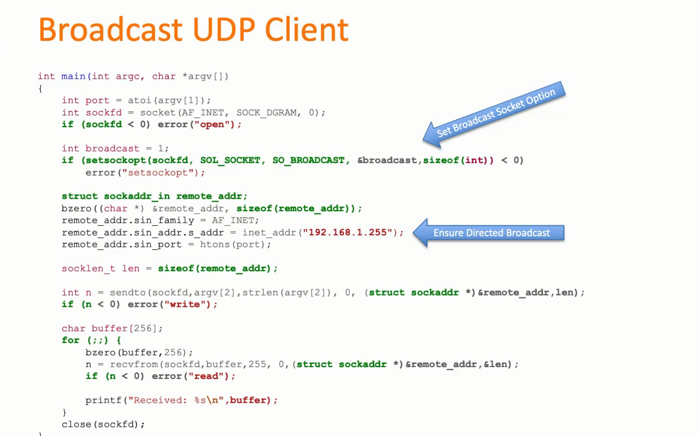
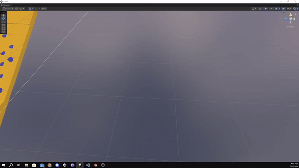
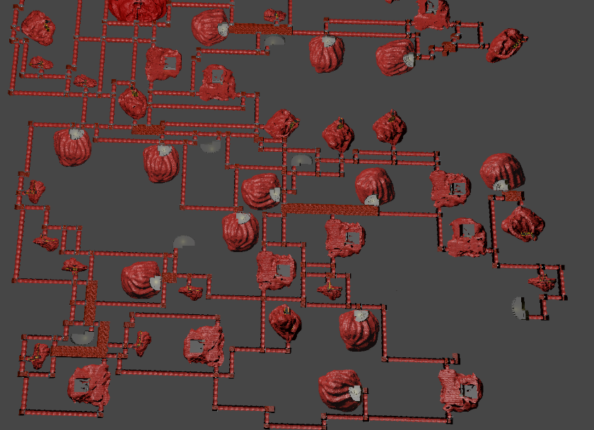
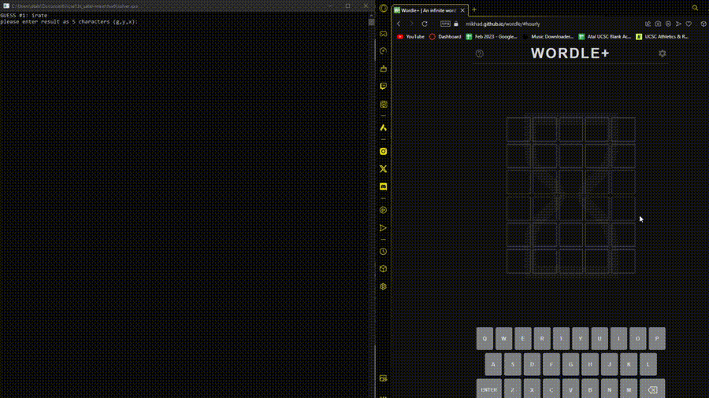

Hello and welcome to my portfolio!
I am a highly motivated and self-driven programmer. Adept at both solo and
collaborative projects. I have experiencing creating Software and Projects involving Multiplayer & Networking, Multithreading & Parallel Processing,
Artificial Intelligence (State Machines, PathFinding, and Machine Learning), Procedural Animation (Inverse Kinematics), Physics Simulations,
Advanced 3D Mathematics, Industry Standard Audio Tool (FMOD Studio), Procedural Generation, and Animation Blend Trees.
Possessing strong technical skills in C#, C++, Python, JavaScript, Unity, and Unreal Engine, combined with hands-on experience in programming software and games. Known for excellent problem-solving abilities, and a commitment to continuous learning and professional growth.
Projects

Procedural Animation System - Inverse Kinematics

Multi Threaded (24 CPU, 4 PC)
Distributed Networked Password Cracker
 Multiplayer (P2P, Physics Synchronization)
Multiplayer (P2P, Physics Synchronization)
 Artificial Intelligence | State Machines (PathFinding, Memory, Searching Behaviour)
Artificial Intelligence | State Machines (PathFinding, Memory, Searching Behaviour)

Artificial Intelligence | Steering AI PathFinding System
Procedural Generation | 3D Dungeon Corridor Path Finding
 Physics Based Driving Simulation
Physics Based Driving Simulation
WORDLE Game Solver